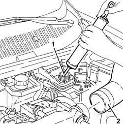
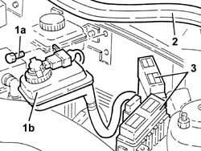
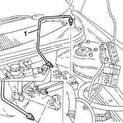
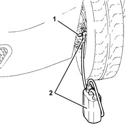
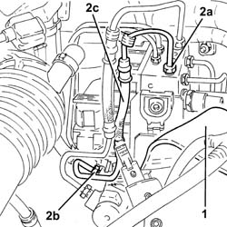
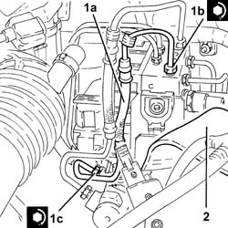

3340b52 pump/central obs pipe - r r
- Path
- Procedures > 33 BRAKING SYSTEM > 3340 A(B.S. ANTI-LOCK BRAKING SYSTEM .) > 3340B abs system pipes > 3340b52 pump/central obs pipe - r r
- Kind
- repair procedure (removal / refitting; the operation number is the code)
- Applies to
- all engines; all production periods
- Interactive page
- https://sloeber94.github.io/elrnDB-a156/en/#/3238100
Applies to: all engines; all production periods
 Removing
Removing
 Refitting
Refitting5530B52 Battery DRIP TRAY/SUPPORT - R.R.
1. Drain the brake fluid from the reservoir using a suitable syringe.
2. Disconnect the air inlet hose from the inlet manifold.

Applies to: all engines; all production periods
1. Undo the bolts (1a) and move the brake-clutch fluid reservoir (1b).
2. Remove the engine bulkhead seal.
3. Move the relay holder brackets.

Applies to: all engines; all production periods
1. Undo the connectors and remove the rigid pipe from the master cylinder to the hydraulic control unit.

Applies to: all engines; all production periods
Refitting
RemovingFit the rigid pipe from the master cylinder to the hydraulic control unit and fasten the connectors to the recommended torque.
 | Fastening | Component | Ø | Value (daNm) |
|---|---|---|---|---|
- | Connector | BRAKE SYSTEM FITTINGS | M10 | 1.3 - 1.5 |
Place the relay holder brackets back in their housings.
Place the engine bulkhead seal back in its seating.
Place the brake-clutch fluid reservoir back in its housing and secure it using the bolts.
Connect the air inlet hose to the intake manifold.
3330A14 HYDRAULIC BRAKING SYSTEM - Bleed air
Applies to: all engines; production: da 03/02 a 09/03, da 10/03
Removing
RefittingProceed with the removal 5530B10 battery - r+r .
1. Remove the protective cap on the brake caliper bleed valve.
2. Connect the collection system (pipe and reservoir) to the bleed valve on the brake caliper and loosen it.
Operate the brake pedal until the brake-clutch fluid reservoir is empty.

Applies to: all engines; production: da 03/02 a 09/03, da 10/03
1. Move the protection.
2. Undo the connectors (2a) and (2b), then remove the pipes from the master cylinder to the A.B.S. hydraulic control unit (2c).

Applies to: all engines; production: da 03/02 a 09/03, da 10/03
Refitting
Removing1. Place the pipes from the master cylinder to the A.B.S. hydraulic control unit (1a) back in their housings and tighten the connectors (1b) and (1c) to the recommended torque.
| Fastening | Component | Ø | Value (daNm) |
|---|---|---|---|---|
1b | Connector | PIPE FROM PUMP TO HYDRAULIC CONTROL UNIT | M10/M12 | (A.B.S.) control unit side 1.3 ÷ 1.5 |
| Fastening | Component | Ø | Value (daNm) |
|---|---|---|---|---|
1c | Connector | PIPE FROM PUMP TO HYDRAULIC CONTROL UNIT | M10/M12 | (Master cylinder side) 1.3 ÷ 1.5 |
2. Refit the protection.

Applies to: all engines; production: da 03/02 a 09/03, da 10/03
Proceed with the refitting 5530B10 battery - r+r .
Bleed the air from the braking system 3330A14 HYDRAULIC BRAKING SYSTEM - Bleed air .